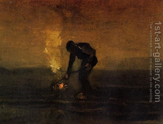

Bava Kamma 22 - Dog or Kid Jump From a Roof
If a dog or a goat kid jumped from the top of a roof and broke the utensils it landed on below, the animal's owner pays full damages. If it fell? This opinion implies that the owner is not liable, but the final law is that in a situation that begins with negligence and ends in unavoidable mishap the owner is liable.
If a dog took a biscuit from the coals and went to a stack of grain sheaves, where it ate the biscuit and set fire to the stack, for the biscuit the dog's owner pays full damages and for the stack he pays half the damage.